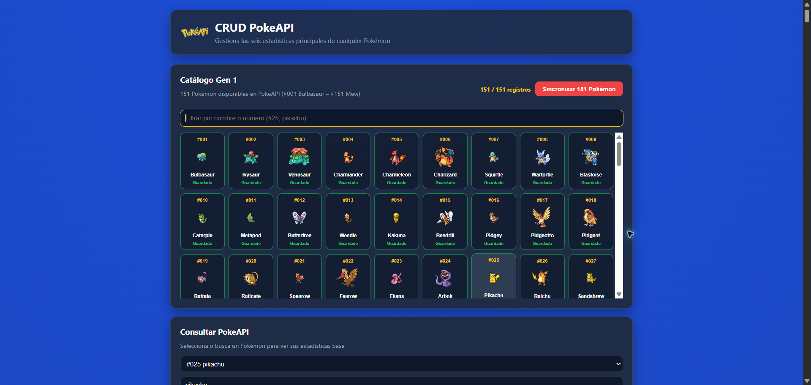
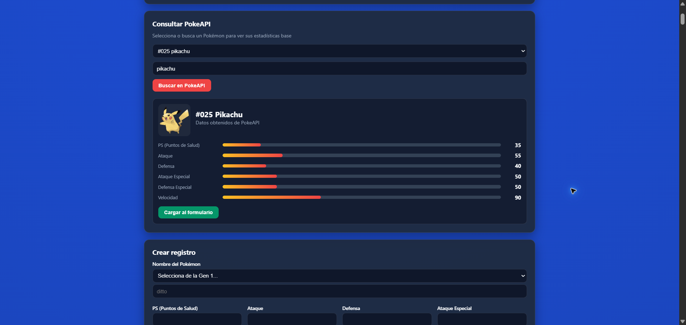
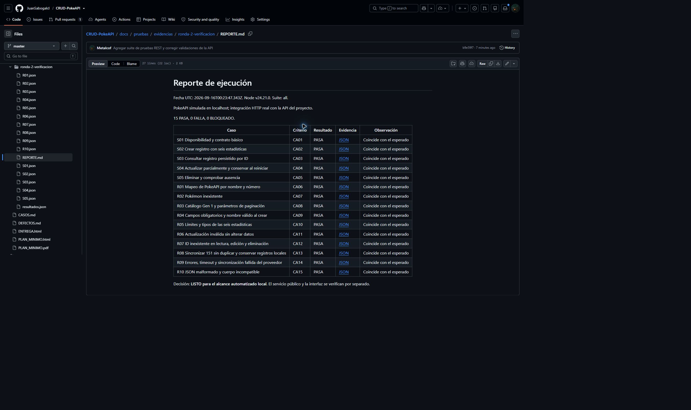

Optativa II - Semana 7 - Grupo 6
Integrantes
Hernan Felipe Patiño Rico
Juan Jose Sabogal Garcia
Orlando Rojas Narvaez
Docente: Diego Fernando Vargas Ramírez
Fundación Escuela Tecnológica de Neiva
Objetivo y alcance. Comprobar el CRUD de estadísticas Pokémon, la persistencia, el catálogo Gen 1, la sincronización y las respuestas de error. Se aplicó la estrategia de la semana 7: priorizar riesgos, separar smoke y regresión y conservar evidencia de cada resultado.
Riesgos. Probabilidad e impacto se calificaron de 1 a 3. El riesgo se obtuvo multiplicando ambos valores. Se probaron primero las funciones que pueden impedir el uso de la aplicación o guardar datos incorrectos.
| Riesgo | P | I | P x I | Casos |
|---|---|---|---|---|
| API o CRUD básico sin funcionar | 3 | 3 | 9 | S01 a S05 |
| Datos inválidos o edición incorrecta | 3 | 3 | 9 | R04 a R06 y R10 |
| Fallo del proveedor o sincronización | 2 | 3 | 6 | R08 y R09 |
| Catálogo o consulta incorrectos | 2 | 2 | 4 | R01 a R03 y R07 |
Ambiente y datos. Windows, Node.js 24.21.0 y Express. Cada caso crea una API local, una carpeta temporal vacía y un proveedor simulado. Dato base: Ditto, ID Pokémon 132 y las seis estadísticas en 48. Se admiten enteros de 1 a 999, como indica el formulario. Las consultas al proveedor real se ejecutaron por separado.
Suites. Cinco smoke comprueban disponibilidad, creación, consulta, edición y eliminación. Diez pruebas de regresión verifican entradas, límites, errores y sincronización. Los identificadores S01 a R10 se relacionan con los criterios CA01 a CA15 en CASOS.md.
Entrada. Dependencias instaladas, datos aislados y resultados esperados definidos. Detención. Una smoke fallida o pérdida de datos impide aprobar la ronda; se conserva evidencia y se corrige. Salida. Se exige 15 de 15 casos aprobados, sin bloqueos ni defectos altos abiertos dentro del alcance. La demostración en línea exige también tres consultas reales aprobadas.
Evidencia. Por cada caso se guarda solicitud, respuesta, resultado y observación en JSON, más el reporte de la ronda. PASA significa que cumple el esperado; FALLA, que no coincide; BLOQUEADO, que no se pudo comprobar. Las pruebas de carga, seguridad y concurrencia entre procesos quedan fuera de este trabajo.
Cada caso inicia con almacenamiento vacío. Cuando requiere un registro, primero crea el dato base. El reporte completo conserva los pasos y respuestas HTTP. Los casos se ejecutan con npm test.
| Caso | Prueba y dato principal | Resultado esperado |
|---|---|---|
| S01 | Consultar etiquetas y colección vacía. | HTTP 200; seis etiquetas y colección vacía. |
| S02 | Crear DITTO con seis valores 48. | HTTP 201; ID válido, nombre ditto y datos guardados. |
| S03 | Consultar por el ID recién creado. | HTTP 200; datos iguales al registro creado. |
| S04 | Cambiar nombre a PIKACHU y hp a 60; reiniciar. | HTTP 200; conserva las otras estadísticas y persiste el cambio. |
| S05 | Eliminar el registro, consultarlo y reiniciar. | DELETE 200; consulta 404 y colección vacía. |
| Caso | Prueba y dato principal | Resultado esperado |
|---|---|---|
| R01 | Consultar PIKACHU con espacios y por número 25. | HTTP 200; ID 25 y estadísticas 35, 55, 40, 50, 50 y 90. |
| R02 | Consultar no-existe-grupo6. | HTTP 404 y mensaje de error en JSON. |
| R03 | Lista con limit=999; limit=10 y offset=150; parámetros inválidos. | Máximo 151; en offset 150 solo Mew; inválidos devuelven 400. |
| R04 | Omitir datos; nombre vacío o numérico; stats nulo o lista. | HTTP 400 y ningún registro guardado. |
| R05 | Probar 1, 999 y "48"; luego 66 variantes inválidas. | Válidos: 201. Inválidos: 400 sin alterar la colección. |
| R06 | Editar con nombre vacío, valores fuera de rango o tipos inválidos. | HTTP 400; registro y fechas sin cambios. |
| R07 | GET, PUT y DELETE con un ID inexistente. | HTTP 404 en las tres operaciones. |
| R08 | Sincronizar 151 dos veces con un registro local adicional. | 151 creados la primera vez; 0 la segunda; total 152, sin duplicar. |
| R09 | Simular 503, demora, JSON externo roto y fallo de un detalle. | HTTP 502 o 504; sin guardado parcial. |
| R10 | Enviar JSON truncado y cuerpos que no son objetos. | HTTP 400 con error JSON; la API continúa funcionando. |
En R04, R05, R06 y R10 se compara el estado anterior con el posterior para comprobar que los rechazos no modificaron los datos.
La primera ronda detectó seis fallos. Después de corregirlos se ejecutó nuevamente la suite completa. Las comprobaciones adicionales realizadas al preparar los pantallazos mantuvieron el resultado de 15 casos aprobados.
| Ronda | PASA | FALLA | BLOQUEADO | Decisión |
|---|---|---|---|---|
| Diagnóstico inicial | 9 | 6 | 0 | NO LISTO |
| Después de las correcciones | 15 | 0 | 0 | LISTO |
| Comprobación para pantallazos | 15 | 0 | 0 | LISTO |
La comprobación adicional terminó el 2026-09-16 00:49:49.653 UTC. Los tres controles independientes contra la PokeAPI pública también pasaron: consulta de Pikachu, lista de 151 y nombre inexistente.
| ID | Fallo observado | Corrección y verificación |
|---|---|---|
| D01 | Con offset=150 se devolvían 10 Pokémon, fuera de Gen 1. | Limitar la paginación. R03 terminó PASA. |
| D02 | POST aceptaba un nombre compuesto por espacios. | Validar tipo y nombre no vacío. R04 terminó PASA. |
| D03 | POST aceptaba hp=0, contrario al mínimo del formulario. | Exigir enteros entre 1 y 999. R05 terminó PASA. |
| D04 | PUT guardaba un nombre vacío y modificaba el registro. | Validar antes de modificar datos. R06 terminó PASA. |
| D05 | Un 503 del proveedor se reportaba como Pokémon inexistente. | Distinguir 404, 502 y 504. R09 terminó PASA. |
| D06 | Un JSON malformado devolvía una página HTML de error. | Responder con error JSON. R10 terminó PASA. |
Al enviar hp=0, la primera ronda obtuvo HTTP 201 y guardó el registro. La verificación actual obtiene HTTP 400 con el mensaje “La estadística hp debe ser un entero entre 1 y 999”. Los archivos R05.json de ambas rondas conservan las solicitudes y respuestas para comparar.
docs/pruebas/evidencias/ronda-1-diagnostico
docs/pruebas/evidencias/ronda-2-verificacion
docs/pruebas/evidencias/ronda-4-captura-terminal
docs/pruebas/evidencias/integracion-real
Cada carpeta contiene resultados.json y REPORTE.md. En las rondas locales también hay un archivo JSON por cada caso. La evidencia de cada fila está identificada por S01, S02, etc.; las observaciones describen el fallo o indican que coincidió con el esperado.
Capturas reales tomadas en http://localhost:3000. Se muestran las zonas relevantes de las imágenes; los PNG completos están en docs/pruebas/capturas.


El reporte de la segunda ronda quedó publicado en el repositorio. La captura muestra 15 PASA, 0 FALLA y 0 BLOQUEADO, con un enlace JSON para la evidencia de cada caso.

El proyecto cumple los 15 casos definidos para la actividad y las tres consultas reales adicionales. Los seis defectos detectados en el diagnóstico se corrigieron y verificaron. Se considera listo para la demostración académica dentro del alcance probado.
Para repetir la suite se utiliza npm test. Para consultar el proveedor real se utiliza npm run test:live. La documentación detallada está en CASOS.md y DEFECTOS.md. Quedan pendientes, fuera del alcance, las pruebas de carga, seguridad y concurrencia entre procesos.
Diego Fernando Vargas Ramírez. Optativa II, Semana 7, Estrategia de pruebas y plan mínimo. Diapositivas 4 a 10.
Repositorio: https://github.com/JuanSabogalcl/CRUD-PokeAPI